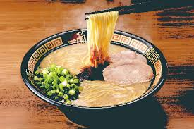

走進日本拉麵店，此起彼落都是吸麵聲，這並不是無禮。在日本人的角度，反而是代表美味及讚嘆拉麵師傅的手藝，是欣賞食物的表現。
當然，這種聲音不能強加造作出來，只要是享受食物而發出的聲音，不會是壞事。
(2) 喝光拉麵湯？
所謂「湯底是拉麵的靈魂」，港人通常怕湯太濃，喝「一啖起兩啖止」，但日本人反而視喝湯為尊重拉麵師傅，因為湯底通常是一碗拉麵最難烹調的部份，最能顯出師傅的心思。
本年3月時候，日本網媒Sirabee，更向1300多名的日本男女進行「平常會否喝光拉麵湯」問卷調查，得出薪金越高的人，越有喝光拉麵湯的傾向。
(3) 傳統拉麵都有「替玉」
「替玉」即是加麵的意思。一碗傳統拉麵，一般都不會放太多麵，大約120g，因為拉麵容易浸軟或浸爛，影響口感，
所以客人差不多吃完的時候，師傅便會來個「替玉」，為客人原湯送上新鮮煮好的麵，食客就能享受軟硬適中的拉麵。
(4) 下單紙揀麵、濃度、才配料 並不正宗
香港部份拉麵店，都是以拉麵紙下單，讓客人圈出拉麵軟硬、湯的濃度、配料等，其實此舉並不正宗。
日本大部份頂級拉麵店，甚至地道拉麵店，都不會讓客人選擇，由師傅決定一切。因為師傅是最了解，湯、麵、配料、醬油的混合，製成高水準的拉麵。
(5) 拉麵店為何只提供冰水
日本人吃拉麵時，大多不會配甚麼特色飲品，「檸茶、檸水」全部欠奉，餐桌上只有一杯「冰水」。
作用是緩和濃郁的湯味，亦是幫忙降溫，避免因麵太熱而麵浸太久或浸爛。冰水伴拉麵是當地一種飲食文化，所以即使冬天到日本吃拉麵，還是附上一杯冰水。
(6) 不將筷子平放碗上
杜如風將筷子直插進拉麵，當然視之為不敬。其實日本人亦不喜歡將筷子平放碗上，老一輩視為不禮貌行為，必要時通常都會放在筷子架上。
